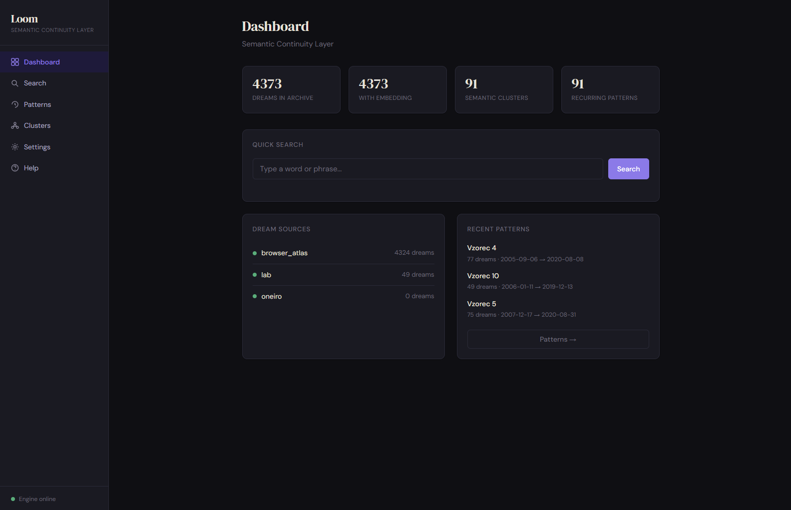
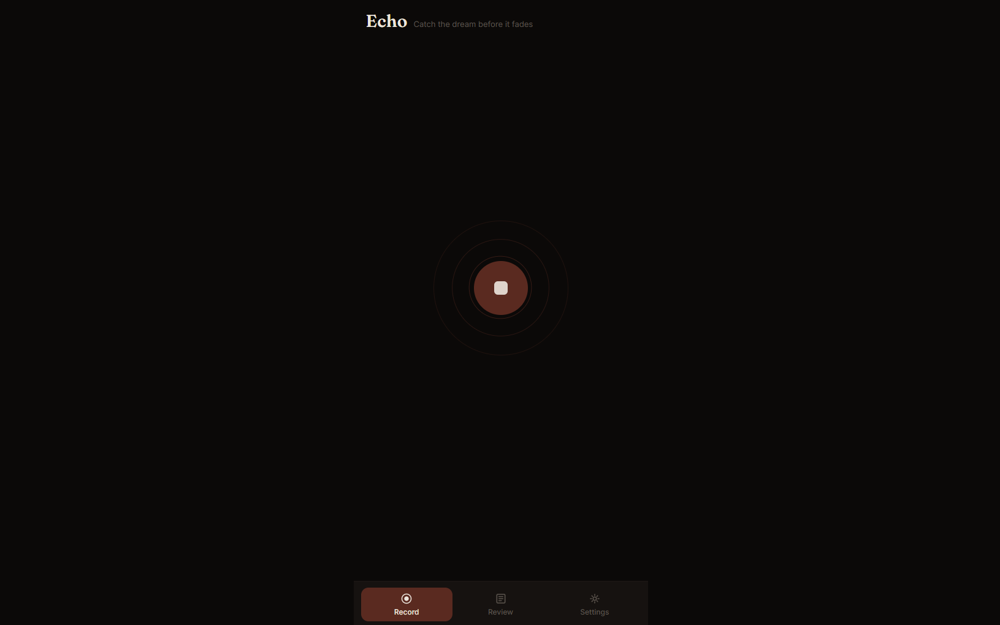
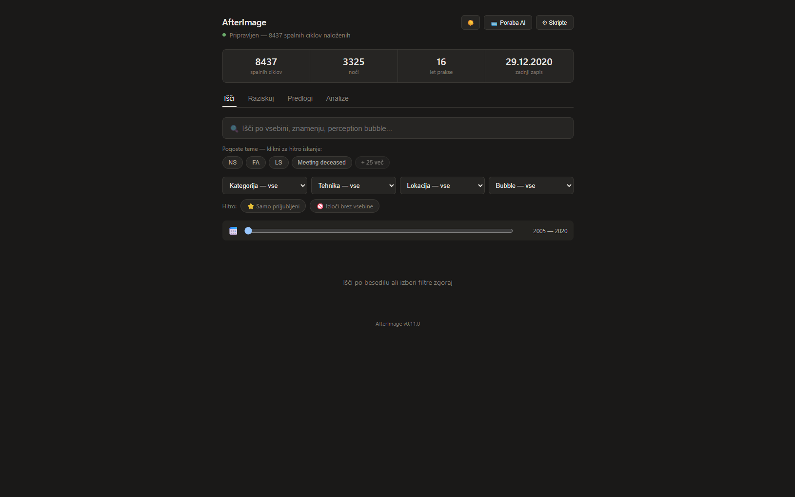
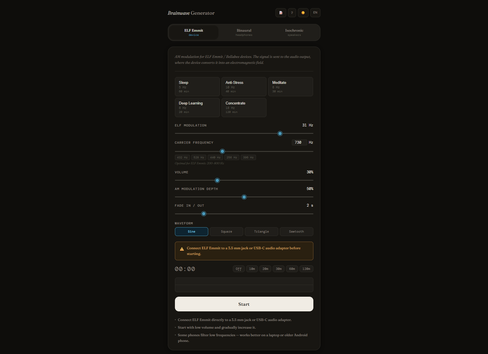

Not every idea becomes a product. Some remain experiments. Some evolve into core Sentria systems.
The Sentria Lab is where new approaches to dream continuity, symbolic analysis, and reflective tools are explored — before they become part of the wider ecosystem, and sometimes instead of it.

An evolving semantic memory system designed to connect dreams, symbols, locations, and recurring patterns across time — gradually building a living map of inner continuity.

Capture dreams naturally by voice and transform them into structured, searchable reflections — for the moments when typing isn't the right tool.

A local research tool for surfacing hidden structures, timelines, and recurring themes inside a personal dream collection.

An early, raw exploration of binaural and isochronic tone generation — the predecessor experiment behind what later became Limina.

An experimental dashboard combining dream journaling, custom analytics, and structured learning tools to support lucid dreaming practice and self-observation.
Lab Notes
Reflections on where Sentria is heading, written along the way. Available to Lab supporters.
Join the Lab
The Lab supports independent research and long-term development of the Sentria ecosystem. Membership isn't open yet — sign up on the homepage to hear when it launches.